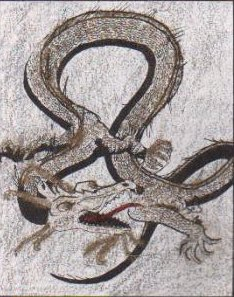

(The previous adventures of Olen, Scurge and Stor can be found on Olen's first page.)
Stor and Scurge ran up to Olen, cradling an unconcious Abath in his arms. Stor tried to spit something along the lines of "Well... he looked like... you were... Scurge!" Scurge would have embraced Olen if it were not for her own inhibitions, and the hulking dead weight Olen struggled to hold up.
"This isn't some black freaking sash! This is.. well... his name is Abath! He knows me! He has to be--"
Abath convulsed quickly and muttered some dark elven curse under his breath and his hand twitched toward the back of his head.
"He has to be from Aalam!" Olen whispered harshly. Stor's eyes lit up, and Scurge looked puzzled.
"From your world?" she queried.
"Yes! And he told me he wanted to bring me home! And then--"
Abath shuddered again and seemed to be coming around.
Olen whispered harshly again. "And then YOU had to knock him out! What was that thing anyway?"
Stor bent over and picked up the blunt arrow, and shrugged his shoulders.
Olen shook his head in disgrace.
"Is he going to be okay, Olen?" Scurge asked innocently. Olen immediatly remembered exactly why he was angry at Stor, and looked down to examine the old man's head. There had been a frail cloth hood in between Stor's arrow and Abath's head. Olen gently pulled back the cloak hood, off Abath's head to examine any wound. He pulled it off to his neck.
"By Gael...." Olen invoked the name of his deity again. Scurge approached quickly.
"How bad is it, Olen?"
Olen answered with actions. He swept back the man's medium-length, jet-black hair from his ears. They were pointed. Tanned. A tiny v-shaped obsidian stud was through the fleshy part of Abath's ear.
There was a scream in the distance. All three conscious adventurers looked up. It came from the town. It was followed by several more screams, as a crowd-like cry escalated from the silence. Through the dark, from the other side of the village, they saw tiny bulbs of light, torches, moving quickly in all directions.
"We better get go--" Olen was cut off.
Suddenly Abath awoke, jolted away from Olen and replaced his hood violently. His teeth were bared in anger, but quickly receeded to his normal face. For the first time Olen got a good look at Abath's face. It clicked. [Int check: needs 17 or below, rolls 15.] He remembered.
Abath thought quickly. They've seen my ears, the Holy Chevron...
As Stor and Scurge got battle ready, Olen stared intently, desperately at Abath's face. Memories flooded back.
"This cannot happen. It is essential that this cannot happen!"
The battles, the spells, the dark elves, the power... Olen's gaze was fixed intently, excitement ever-increasing. His brows squinched in, in hatred.
Scurge spoke loudly. "We better get the move on, one way or another!"
Olen ignored her.
"I have no choice. The woman may have seen it too. I do not know of her background."
"The darkness, the evil, the smell of magic-scorched flesh.... Abath is dark elven! Abath is evil! Abath is a killer! Abath was--" Even Olen's thoughts were not immune to interruption, as Abath waved his hand. The three dropped to the warm, wet forest floor.
Abath relaxed and opened his eyes.
* * * *
Olen was flying over a yellow field. The field had grass that was yellow on top but black on the bottom of the stalk. Hot, hot wind blew through Olen's face. Someone was speaking. Olen looked around. It was dark around the sky. Only the orange grass... the hot wind....Olen's eyes burst open. He stared into a camp fire only a matter of feet away from his face. Around the fire were Stor, Scurge, and Abath. "Abath? Who is Abath... Oh yes... the old man. What a friend."
"I am surprised that Olen has not yet--oh, Olen! Hello! Welcome back! I was getting worried that hobgoblin's club had hit you a bit too hard!" Abath spoke in a friendly voice. Scurge chuckled as she chewed on some meat. "Was is rabbit? Snake?"
He did feel a pain on the back of his head. He moved his hand to it. There, indeed, was a large welt on his skull. Crusty blood rubbed off on his fingertips.
Scurge addressed Abath. "Tell Olen how we got here." Indeed that was Olen's next question as he rose from the dirt and scooted back away from the fire. Stor nodded a greetings. The fire's crackle echoed in the early morning forest. Not quite bright yet. But you could feel the night running away.
"We were ambushed, friend. The whole village actually. After we left the bar together that hobgoblin pack raided, about midnight. They were upon us obviously as well. Olen went down first. The hobgoblins trampled Stor," indeed as well, for Stor's clothes were muddy with footprints on them, "And Scurge had had one too many elven ales at the pub!" All laughed. "Luckily I managed to fend them off and drag my team to safety!"
A little far-fetched, Olen thought, but it was Abath. He wouldn't lie. Perhaps he'd exaggerate a bit, but he wouldn't lie. Personally, he couldn't remember going to the bar... yes, nevermind, he did. He had gone to the bar. "Nevermind."
Abath smiled and gazed at Olen just over the sizzling flames of the fire. He wiped a bead of sweat from his forehead and adjusted the hood on his head.
"Ah, Olen, you remember with fondness all the wonders of our land. That is a comfort to me," Abath said, his eyes never once leaving Olen's. "You may not realize it, but our land has continued in its strife and melancholy. There is a need for the faithful and good to return and make a stand for all that they, and our peoples, once stood for."
Olen looked surprised, and then an emotion that Scurge did not recognize drifted across his countenance--something more dark and sinister than she wanted to believe. And then a spark, as if Olen was realizing some truth that he had long forgotten but never never should have... and then Abath was closing his eyes and Olen's face once again became a reflection of Abath's concern and love for their homeland.
"Something is very wrong here," Scurge thought, as Abath opened his eyes and smiled. She shuddered, and realized that Olen seemed to respond to that smile in a way that she had never before seen. He lowered his eyes in deference, waiting for Abath to continue his ramblings.
"I'm getting very tired. Don't you think we should assign watch duties?" she suggested, hoping to pull Olen's attention back to their present situation. "After all, we don't want these hogboglins to come back and surprise us."
"That is 'hobgoblins', my dear," Abath said, and chuckled, secretly wondering what Olen saw in such a dimwitted woman. "It doesn't really matter," he thought, proud of himself, "Olen is mine now." "And you don't have to worry about them bothering us anymore. Let's just say they aren't too happy they ran across my powerful magicks."
"Hobgoblins, of course," Scurge replied, struggling to appear embarrassed. "Gotcha," she thought. "Well, it has been a long night, and I am very tired. So if you don't mind, I'd like to take the last watch, Olen." Scurge made a point of addressing Olen, even though it seemed Abath was in charge tonight. "Stor can take second watch," she continued, glancing at Stor, who was drooling in his sleep, "and you can begin for us."
"Alright," he replied, "that will give Abath and I more of a chance to talk without losing much-needed rest. Goodnight." Olen half-smiled at Scurge. He betrayed no hint of the growing affection he'd been bestowing upon her the past couple of weeks.
"Goodnight," she offered, but his thoughts had already resumed their attentions to Abath. She walked over to her bedding, and lay still until she believed they would think her asleep, and then she listened.
Scurge lay on her right side with her back to the fire and the two still talkin away. Shielded by her position, she clenched her teeth.
"This is not right at all! Olen was beginning to pay attention to me! I KNOW there are no hobgoblins in Trassgar! Who is this Abath character anyway? It is just too unclear to me right now. I don't remember meeting him... but... then again I cannot deny it, and I cannot remember meeting him in the first place. Why is my memory so... vague?"
Olen and Abath continued to talk. Scurge glanced up at the moon. Not quite time to wake Stor.
"You see, Olen, the Shiel is in trouble. The empire is again being faced with a serious threat from the dark elves." And to himself, Abath chuckled, for this was not completely false. "One of the high magistrates himself mentioned your name, Olen, in the discussions of heroes to relocate and commission to defend the empire. And I am very lucky to have found you when and where I did. Soon, you will be able to come home with me." Just as soon as I get rid of Olen's pesky friends. I do not trust the woman, and I do not believe her to be so naive. The archer is no threat. A simple web spell with have that half-wit entangled for weeks.
"When can I go, Abath?"
Abath did not hear Olen, and was fixated aimlessly on the fire, his mind directed toward higher thoughts.
And yet, and yet... I sense something else. As if we were not alone and yet... still unaffected by some anomaly of sense I cannot ignore. Even more of a threat than the woman... but yet, passive and non-threatening. Perhaps not even aware of our presence, much less its own. This truly is a phenomenon worth paying attention to, for my honed elven senses of proximity have never decieved me before.
"Abath? Abath? When can I go?"
Lutanian D'Abath Dlen'Lowy came back to his senses. He looked the young magician in the gold bespeckled eyes and smiled.
"Very soon, my son. Just as soon as certain... matters of interest are completed."
------------
Scurge rose and checked the moon. Close enough. Abath had evidentally shut up for the time being, and Olen was hopefully awake on watch. The fire was low and barely audiable.
Looking forward, away from the campfire, the forest was dark and foreboding. Shadows flashed in the withering firelight. Scurge's eyes and forehead ached, probably a result of sleeping downwind from the campfire smoke. She turned around.
A shrill scream nearly escaped her lips as she turned around and saw a medium-sized magnificent golden translucent dragon, like the ones she'd seen in scouting books, ethereally hovering in dream-like motion above and around Olen, who stared innocently and dazedly at the dwindling fire. The wings of the apparition enfolded Olen's figure, and the dragon's massive back claws were settled one each at Olen's sides. The long scaled neck craned high into the trees above, the large, fiery nostrils breathing golden tongues of flame.
Scurge jolted herself awake, kicking her legs and pushing her head off the cold ground. She turned her eyes from the dark forest to Olen, who sat calmly staring into the dying fire, his arms around his knees. He looked at her with a warm smile and humble eyes.
"Scurge? Bad dream?"
"To tell you the truth, Olen," Scurge said, "I really don't know."

Eebnox Zorbulussinificcipid stretched his golden, leathery wings as he caressed the night sky with his ancient, scaled form. The graceful creature of the air long ago lost the ability to keep private his thoughts which touched the minds of the sentient species of the land: "SSSleeeep," his mind beckoned. The winged giant's innate ability to affect the slumber of others calmed, soothed, and laid to rest the deliberate chirpings and nightsongs of the creatures of the night.It was not an easy effort, his circling the planetoid named Trassgar by its native elven race, but the ancient golden dragon remained undaunted in his search, and continued his probing of the consciences of those he encountered.
This dragon's journeys were not unobserved. His passive audience was content to follow Eebnox's travels through the lands of Trassgar. Now, finally, Eebnox reached that mountain peak which was both the start of his recent journey, and prior to that, his prison since a time before the original elven calendar had been reset. He clutched a terrace of rock, and the mountain itself seemed to groan not so much under the weight of the dragon's bulk, but almost in sympathy to the creature's pain. Slowly, he craned his neck in a wide arc over the countryside. Below him, the mining townfolk had ceased their operations. Most were asleep, but Eebnox paid to the still-awake citizens of the town the greatest attention. The rush of air into the behemoth's mouth and lungs, and the ensuing exhalation sounded no different to the humans of Himm than a fierce wind snaking around the precipices and crevices of their mountain.
To the dragon's observer, it was apparent that Eebnox was looking, searching for someone, and inspiring toward peaceful slumber all those in his path, as if to grant them a rest in preparation for a time of great trial. "Ah, what do you search for, ancient one?" spoke the ethereal voice.
Zorbulussinificcipid responded, predictably, by ruffling the scales on along the back side of his long tail. The dragon curled the tendrils of his chin in amusement at being the object of such great attention.
A minute's pause, and then the dragon suddenly took flight, gracefully sifting through the currents of the skies once more. His eyes, indeed all senses, and thoughts, focused on the newcomer's presence. Eebnox's course seemed determined this time, and was observed with interest.
The ripple of magic, infinitessimally detectable, yet unmistakeable as it spread concentrically from its epicenter, had captured the curiosity of not only dragon, but spheric being as well.
A gate had been forcibly accessed. "No good will come from this."
Eebnox raised one of his long, scaled eye brow in interest, and silently agreed in penetrating thought.
* * *
Tyrna Bolder, apprentice to one of the elder smiths in Himm, suddenly stopped as she was about to fasten the lock on the shop gate. She turned to her teacher, and with a half-blank stare into the sky, spoke. "No good will come from this."Her teacher, confused, and suddenly more tired than he realized, thought to look to the sky, where Tyrna's gaze had focused. The light of the Elder Moon was slightly obscured for just a brief instant as something large passed high overhead.
Scurge returned his gaze, staring into Olen's gold-tinted eyes. She fought to recall her memory of their first meeting, before his encounter with the dragon orb at Himm. Before his eyes took on their new color. Before they had developed a mutual attraction which she now felt was threatened by this newcomer, this old friend of Olen's from his homeworld.
"Why do I always fall for the off-worlders?" she thought to herself with a smile. Standing, straightening her ensemble of tunic and leggings, and glancing at Stor, who lay, asleep and slightly curled a few feet away, the rogueish adventure sauntered over to her half-elven companion. She noted that Abath was nowhere to be seen.
"He took a walk," Olen offered, assuming Scurge would ask where the old mage had gone. His gaze shifted to their fire. "Said he needed to meditate a bit in the darkness of the forest before retiring for the night. [Cha check: 10 Yea!] I, uh, told him to grab some twigs for the fire while he was at it."
Scurge smirked, chuckled to herself and sat down. "Now that was funny, Mr. Orpheas," she commented. Olen appeared confused at first, but then remembered how most of his attempts at humor seemed to go unappreciated in his new, yet welcome, company.
"Heh," he mumbled, then noticed the sweat that had formed on Scurge's brow, and how she looked more pale than usual, even in the relative darkness. He recalled her abrupt awakening. "Hey--what about that dream. You ok?"
"I--I don't know." Scurge found herself with a loss of words to describe her dream, still emotionally imprinted in her mind. She wiped her forehead with her sleeve. "Tell me about Aalam, about Abath. Olen I don't trust him. I don't believe him. Do you? Does he really need you now? Does Aalam really need you? More than...." She paused, then thought, "more than I need you to be here to remind me how good a man can be?"
"More than what? Scurge--what is it? What's really bothering you?" Olen's visage was covered with worry, and his mind seemed to regain the focus he hadn't felt in over a day.
"The dragon," Scurge all but blurted. Her mind was a buzz with images, feelings, and a grogginess most likely from trying to stay awake to spy on Abath. "Tell me about the dragon."
Olen was slightly confused, having already related to Scurge the tale of their adventure in Himm. "I told you of the dragon. What do--wait. Wait. Was the dragon in your dreams?"
Scurge nodded. "He was gripping you by the shoulders, but you were not in pain. He was more of a... a vanguard."
Olen nodded in return. "Yes. Before he departed, he promised that he would be there in my greatest need. My eyes reflect his promise." Olen unfolded his hands, and leaned back on his elbows to stare at the sky. "I sometimes wonder where he is. If he found his old friends, just as I...." Olen paused, and reached out to place his hand upon Scurge's. "Just as I have found new friends." Olen turned to stare into Scurge's eyes.
"I know I have found my friend." It was Abath who broke the pregnant silence. His voice carried a mocking tone.
"Curses, how long have you been standing there?" Scurge thought to herself. Rising, Scurge confronted the dark-clothed stranger, striding in between Olen and his 'long lost' friend. Her arms at her side, she was ready to tense the muscles of her arm in such a way as to release the dagger from the leather wrap keeping the weapon concealed in her sleeve. "Abath," Scurge spat. She was tired of his false pretense. The hobgoblin story was a pitiful attempt at deception--but how could a stranger to Trassgar know that hobgoblins had not yet arrived at the land? But claiming Olen to be his friend--she refused to believe that pairing. "Forget your twigs, old man?"
"Why yes, I did." His expression was sinister. Shouldn't you be asleep?" [Abath gains the element of surprise.] With that, Abath raised his left hand and unclenched it. Scurge spied a cricket flung from his grasp, the dark elf's other hand making a precise gesture. Abath spoke something foreign through clenched teeth, and Scurge felt a bristling down her spine. [Abath has cast a sleep spell. 2d4=3+4=7 hit dice are affected.].
Scurge collapsed to the ground like a puppet whose strings had suddenly been cut. "Damn you, Abath...." the thief muttered as she crashed involuntarily to slumber.
Abath's gaze turned to Stor, who snored even more heavily. [Abath's spell has 4 hit dice left after affecting Scurge (7-3=4), just enough to magically keep Stor asleep.] "All too easy," Abath spoke, shifting his stare back to Olen. "Did you think I would let you make up your own mind about returning to your homeworld? Certainly I can't allow others to persuade you against it!"
Olen, staff in hand, stood shocked. His own fists were clenched, and his teeth were grinding in anger. He recognized what Abath had done, despite the fact that he did not speak Abath's native dark elven tongue. [Well, Olen used to, but he doesn't remember. Anyway, thanks to the spellcraft proficiency for recognizing the spell. Olen needs an Int check -2 to recognize the spell. Roll=9 < 17-2. Gotcha!] "What did you do that for? I thought...." Olen wrinkled his brow with confusion. [Int check. Does Olen figure out what is going on? Roll=15. Yep] He half-turned his head, realization flooding into his mind. "You thought you could twist my mind to do your bidding?!"
With Abath's plans revealed, the dark elf released his hold on Olen's mind, and Olen finally remembered with clarity the entire situation. Abath was dark elven. Evil. A temptation and a road Olen himself had regrettably travled, once. "You abomination!" Olen yelled.
"No! A fulfillment! Come with me--return to Aalam with me!"
Olen paused momentarily. What would he do? His power was no match for Abath. He could recognize that much. But would his strength of will prevail where is magic could not? He stared into Abath's eyes. In the light of the Elder Moon, the forest of Trassgar suddenly seemed to stand still with fear. Or was that just his own heart, frozen with indecision?